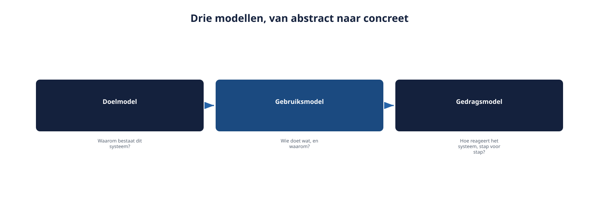
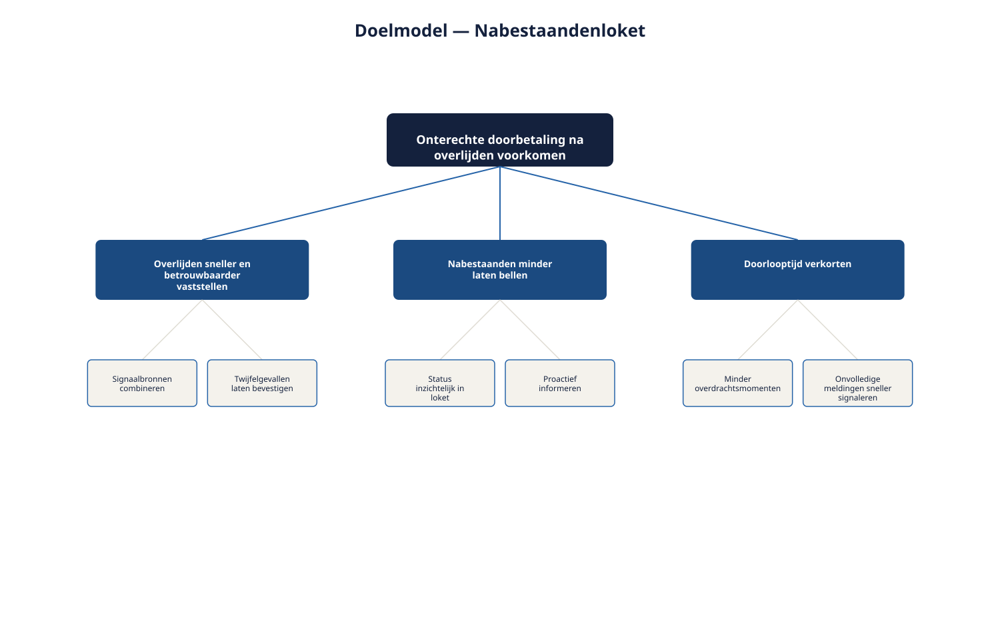
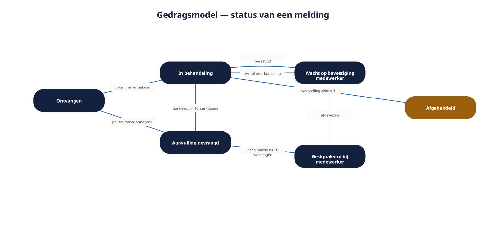
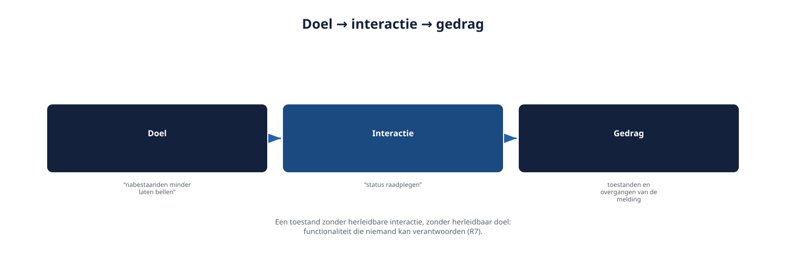

Deel 7 — Modelgebaseerde requirements: doel-, gebruiks- en gedragsmodellen
Slidedeck · Ductus-cursus Requirements engineering · niveau 1 · deel 7 van 10 · 28 slides
Slide 1 — Titel
Modelgebaseerde requirements
Doel, gebruik, gedrag
Cursus Requirements Engineering — Niveau 1, deel 7
Ductus
Slide 2 — Vandaag
- Drie modellen, drie vragen
- Het doelmodel
- Het gebruiksmodel
- Het gedragsmodel
- Hoe ze samenhangen
Slide 3 — Elk diagram in het functioneel ontwerp toonde maar één ding:
het gewenste verloop. Geen enkele uitzondering.
Slide 4 — Een model dat alleen het goede geval toont,
is geen fout model.
Het is een onvolledig model dat eruitziet als een compleet model.
En dat is gevaarlijker dan geen model.
Slide 5 — 1. Drie modellen, drie vragen
Slide 6 — Figuur 7-1

Slide 7 — Elk model, één vraag
| Model | Vraag | Toont niet |
|---|---|---|
| Doelmodel | Waarom bestaat dit systeem? | Actoren, schermen |
| Gebruiksmodel | Wie doet wat? | Interne werking |
| Gedragsmodel | Hoe reageert het systeem? | Waarom (dat staat in het doelmodel) |
Slide 8 — Opdracht 7.1 — Welk model?
Zes vragen. Doel, gebruik of gedrag?
Individueel · 10 minuten
Slide 9 — 2. Het doelmodel
Slide 10 — Figuur 7-2

Slide 11 — Twee toetsen
- Bijdragetoets — draagt dit subdoel echt bij, of staat het er toevallig naast?
- Volledigheidstoets, met mate — wat mist er echt, niet: wat kán er nog bij?
Slide 12 — Wilma wil minder telefoonverkeer.
Faisal wantrouwt zelfbediening bij onomkeerbare stappen.
In het doelmodel: twee takken, geen tegenstelling.
Slide 13 — Opdracht 7.2 — Het doelmodel toetsen
Vier nieuwe subdoelen. Bijdragetoets toepassen.
Tweetallen · 20 minuten
Slide 14 — 3. Het gebruiksmodel
Slide 15 — Actor, interactie, waarom
| Actor | Interactie | Waarom |
|---|---|---|
| Nabestaande | Melding indienen | Overlijden snel formeel afhandelen |
| Nabestaande | Status raadplegen | Weten zonder te bellen |
| Uitvaartondernemer | Melding namens nabestaande | Eén handeling, meerdere instanties |
Slide 16 — Figuur 7-3

Slide 17 — De valkuil: actor en systeem verwisselen.
"Systeem controleert compleetheid" is geen gebruiksinteractie.
Dat hoort in het gedragsmodel.
Slide 18 — Opdracht 7.3 — Het gebruiksmodel uitbreiden
Minimaal drie nieuwe rijen, met de valkuil-check.
Groepjes van drie · 25 minuten
Slide 19 — 4. Het gedragsmodel
Slide 20 — Figuur 7-4

Slide 21 — WGP 2.0 tekende alleen de bovenste regel:
Ontvangen → In behandeling → Afgehandeld.
Niet fout. Onvolledig — op een manier die niet uit het diagram bleek.
Slide 22 — De toets: wat als hier iets misgaat, uitblijft, of afwijkt?
Elk antwoord is een vertakking die erbij hoort.
Slide 23 — Opdracht 7.4 — Het gedragsmodel completeren
Toets toepassen op [In behandeling].
Minimaal twee nieuwe vertakkingen.
Groepjes van drie · 25 minuten
Slide 24 — 5. Hoe de drie samenhangen
Slide 25 — Figuur 7-5

Slide 26 — Gedrag zonder herleidbare interactie.
Interactie zonder herleidbaar doel.
Functionaliteit die niemand kan verantwoorden. — Bevinding R7, deel 9.
Slide 27 — Wat verandert er als je iteratief werkt?
- Doelmodel: relatief stabiel over iteraties heen
- Gebruiksmodel: groeit mee per epic
- Gedragsmodel: incrementeel opgebouwd, sprint voor sprint
- Zelfde valkuil, kleinere schaal: alleen het pad van déze sprint tonen
Slide 28 — Volgende keer: deel 8
Kwaliteitseisen en randvoorwaarden meetbaar maken
Daarmee sluiten we bevinding R5.